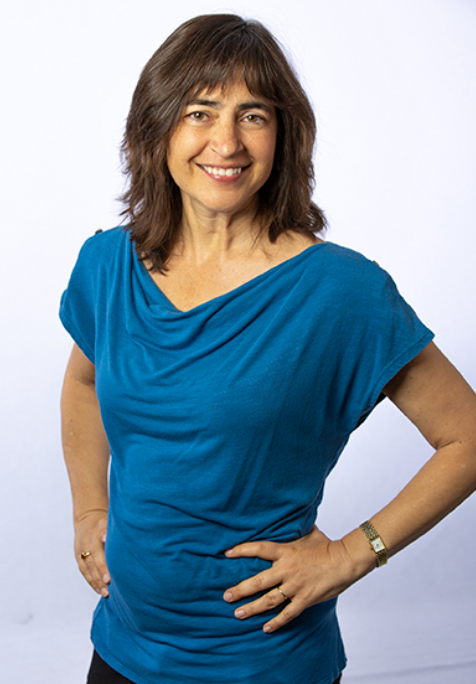
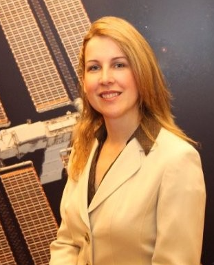
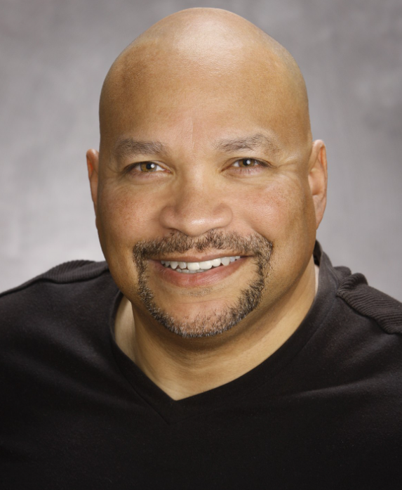

During my time in the engineering program, I have met a number of industry professionals through workplace field trips and guest speakers. They have offered great insight about STEM careers alongside their personal experiences. Since I've spent a lot of time exploring the different areas of engineering, having a mentor, guest speakers, and several field trip opportunities has definitely helped me plan a possible career path for myself. Additionally, talking to professionals has shown me that a career in STEM is not linear; there is always room to do something completely different if you have the interest to strengthen your skills.
Mentorship Experience - Daniel Dummett Torres
Dani has been my mentor for 22-23 school year, and I have learned so much from them. They have not only helped me develop a strong portfolio and professional resume, but also practice for interviews and network with other engineers. Dani provided a great deal of insight about their career at LLNL and what it's like working in a collaborative STEM space. We have discussed how to develop a work life balance and what steps I should be taking in high school to ensure that I can have a successful time in college. Dani encouraged me to take the time to explore, but to also try to focus on something so that I can develop a strong skill set at the time. They gave me advice about figuring out what I want to study, and have been a great source of guidance for me this year. Especially since I will be applying to colleges and making decisions about my future in the fall, working with a mentor was extremely valuable this past year.
Guest Speakers
Laura Kegelmeyer
On March 4, 2024, Laura Kegelmeyer from Lawrence Livermore Labs came to speak to engineering students. Kegelmeyer discussed her with optics for the NIF laser. Although she started her career in biology, she enjoyed the tech aspects as she worked to detect cancer in x-rays. She was scouted by LLNL to study errors in the NIF Laser and work in laser physics in general. It was really interesting to hear about the intersectionality of her work, and the diversity of her experiences. Kegelmeyer shared that she prefers her work at NIF compared to research labs because of the impact she has, and encourages students to take the time to explore as opposed to restricting themselves to one field.
Kathleen Morse
On November 16, 2022, Dr. Kathleen Morse visited my Digital Electronics class to talk about her work. For this talk, she focused on her work with drones and using them in space. She is the founder of Yosemite Space, whose goal is to develop products for space applications. Morse studied materials science at MIT and pursued a career in electronics and space applications, which have allowed her to carefully analyze the performance of drones in space. She works with computer systems and sensors and tries to improve them so they can survive in space. Morse showed us multiple examples of drone swarms on Earth and attempted to simulate how they could function on space missions. Instead of sending out astronauts to perform tedious tasks, drones could assemble together to safely and efficiently do work. The current issue with this is designing drones with thrusters that can last in space and remain in stable configurations with one another. Before her drone work, Morse spent time at Lockheed Martin developing materials, like metals and plastics, that could withstand conditions in space. I was inspired by how she took advantage of her work experiences to develop a career. Morse had a background in materials sciences and didn’t know much about computers, but she learned how to work with computer systems on the job and became an expert. She specialized in electronics and demonstrated how she could apply her knowledge to multiple areas as a successful engineer. It was also inspiring to see how she made her way up, since she began her career as a young woman in STEM.
Maynard Holliday
On October 10, 2023, Maynard Holliday had a guest talk at Dublin High School from the Pentagon. He is currently the Deputy Chief Technology Officer for Critical Technologies at the US Department of Defense. Holliday is a Bay Area Local who used to work at LLNL and Sandia National Lab when he began his career. This brought him to Dublin High to talk about robotics many years ago, and he continues to do so. He moved on to join the Senior Defense Department and become the Deputy Chief Technology Officer for Critical Technology. He works in the Pentagon, overseeing crucial technology related tasks. Holliday discussed his past experience with robotics, since he was on the team that built the first robot sent inside of Chernobyl. He started traveling there in 1994 to help contain radioactive material inside the basement. The robot he designed had to go into the basement of Chernobyl and study the nuclear waste, while enduring the harsh conditions of the plant. Holliday emphasized how he saw the experience in his career as an opportunity to learn and advance onto something larger. He went from a staff member at LLNL to working alongside the President, reflecting a strong career path. I was truly inspired by this because it reflected how everyone had potential, and they just need the right mindset towards their experiences to rise up. He didn’t necessarily rush to the top either; Holliday worked hard and remained steady throughout, allowing him to become more successful through the years. It was motivational to hear about his high school experiences and how he stayed open-minded throughout.
Donald James (NASA)

On December 8, 2021, I had the incredible opportunity to hear Donald James talk about his 35 year experience at NASA and his advice for high schoolers to be successful. Donald James worked in education and public affairs, and before he retired, he was an Assistant Administrator for Education. He spent most of his time at the NASA Ames Research Site as an educator. James talked about the incredible history of NASA and its projects, such as the Orion Spacecraft, Mars Missions, and James Webb telescope. In his early days, he was apprehensive about working at NASA because he had other passions, but after a life-changing educational event and discussion with his father, he realized the importance and prestige of his occupation. In 1996, when the Challenger Spacecraft exploded, NASA decided to educate the public about what had happened. Working with diverse audiences across the country gave James a new vision of education.
As his career progressed, he moved up in position and his boss was a high level marine general. At this point in his life, James realized that it was not solely his intelligence that had allowed him to prosper, but his focus on manners and kindness that his mother had taught him. He went on to write a book, Manners Will Take You Where Brains and Money Won't. James emphasized the importance of finding support, whether it's family or strangers, because you need honesty when you are struggling. From this guest speaker event, I learned that success comes down to improvement and communication paired with intelligence and hard work. You don't have to be a prodigy as a child, but throughout your life, you should make an effort to grow, both intellectually and morally. Donald James inspired me to take initiative as well because I have to show interviewers and employers that I am truly interested in engineering. Moreover, people are more likely to value your work when you are respectful and willing to make mistakes and hear criticism.
Kimberli Zhong (MIT)

Another influential guest speaker was Kimberli Zhong, an DEDA and MIT alumni who now works at an autonomous vehicle company. Zhong started off with her high school experience and how she was already an excelling student who was on top of things since her freshman year. SHe was a member of the first graduating class of DEDA and started the Gael Force Robotics Club, and this was interesting to me because I am a part of both of these groups. She graduated from DHS in 2014 to study computer science at MIT, which is incredible, and she currently works in a startup today. She was always good at math and science, although she was only exposed to engineering in high school, and she cultivated her passion for STEM through robotics. Zhong made it clear that a critical aspect was the secondary outlets for energy and club culture because it allowed her to work her way up to world championship tiers of robotics. In high school, her primary exposure to programming was through clubs and engineering classes, and her personal experiences with coding with robots and raspberry pi.
Although DHS is different now, Zhong’s description of her high school years was inspiring because it revealed how much initiative she took and how anyone could get better at something by getting involved with the groups in their community. The theme of club culture was relevant throughout Zhong’s life because when she went to MIT for STEM, her main connections were found through clubs, like HACKMIT. She discussed how rigorous and CS-heavy her courses were, as well as competitive, and how she was able to get through them because of her passion. She then began to pursue more research positions in grad school by reaching out to a lab and becoming a full time TA. Zhong’s presentation was memorable because throughout her life, she learned to set personal deadlines and constantly push herself. Zhong made it clear that the most impactful part of college was having fun and making sacrifices for fun. College is about exploring and having the freedom to try things out, so it was essentially a stepping stone in her life. She quickly learned that she disliked research and began to look at startups. In her post-college life, she works at a startup called Applied Intuition that is now a billion dollar company that develops safer autonomous vehicles. Because she works closely with robots, Zhong feels that her experiences at DHS really did prepare her for her STEM career.
Field Trips
University of the Pacific - 3/27/24
My final field trip in the Engineering Academy was to the University of the Pacific in Stockton. We toured the campus and had the opportunity to view highlights on the campus, such as the dining hall, business building, and computer science lab. The campus was much smaller than most public schools, but it still had a lot to offer in terms of job opportunities. For example, they have a co-ed program for engineering and computer science majors, which is a great way to get into the field, and it starts from their freshman year. Additionally, due to the smaller campus size, they also have a lot of scholarship and work abroad programs, which was very unique. After touring UOP, we stopped at Las Positas Community College to tour the campus and discuss the TAG (Transfer Guarentee Program) that is a very practical way of getting into a UC, all while saving money. Overall, this trip was an informative way to wrap up my experience, especially as I'm hearing back from colleges and planning my future in the next few months.
Lawrence Livermore Labs (NIF Tour) - 2023
The in-person Livermore Labs field trip was a fantastic experience to witness an incredibly important piece of technology and the people behind it, as well as what it’s like working in research. In the actual tour of the facility, I got Hohlraum, a tiny cylinder housing the fuel pellet used in the first successful ‘ignition,’ a picoseconds-long, controlled nuclear fusion event. Our guide explained how NIF measured this experiment using ‘diagnostics’: over 120 sensitive detectors specifically designed to measure particles and X-Rays produced during ignition. After the tour, we had the opportunity to have a career panel from researchers who worked with lasers and computing, as well as independent research. They discussed how their undergraduate years were mostly for exploration, while the grad school years were more focused on specialization, whether it was in computing, physics, or engineering. Overall, it was a very unique experience to learn about the laser facility in an up-close environment, especially after hearing about it so much in my engineering classes throughout high school, and actually talk to the team behind it.
Roche Field Trip (In Person) - 2023
During the Roche in-person field trip, I had the opportunity to explore computing and devices in medicine, and hear about the unique experiences among Roche staff. During our visit, I was amazed by the number of different departments and how none of the staff had similar backgrounds. For example, Olivia Chung, the Digital Health Lead discussed how she intended to study law, but slowly became interested in innovation in the medical field. Moreover, despite being a bioinformatics company, Roche had several engineers and environmental health/safety departments. Towards the end, it was fascinating to work in small circles and get career advice from engineers, medical professionals, and even human resources workers. Overall, the field trip was very eye-opening, and encouraging for someone like me, who is still exploring and finding what they are passionate about.
Roche Field Trip (Virtual) - 2022

During the Roche Virtual Field Trip, I got to meet a number of industry professionals who talked about their backgrounds and the importance of their work at Roche. Roche is a biotech company from Santa Clara that specializes in pharmaceuticals and diagnostics. Their diagnostics include molecular testing, clinical chemistry, patient salve testing, next generation sequencing, and lab IT. I participated in a coding workshop that taught me about AI, led by Franklin Ventura, a biomedical and software engineer in research and early development. To simulate something similar to what he does, we used an online simulator to create a piece of AI that used visual recognition to identify certain poses we made. It was similar to how researchers use python in research groups for digital pathology solutions to look at tissue and visualize patient samples. Although this was a simple demo, it was very informative because it truly demonstrated how far pathology has come and the significant applications of technology in medicine, like detecting cancer. There is an increasing number of cancer patients, which generates petabytes of data yearly, and there is a need to handle the data when there are fewer pathologists. The process requires automation when looking at biopsies to increase accuracy.
Then, as a group, we met a diverse group of staff at Roche, some who worked more with more technology and others biology. One of the researchers who stood out to me was Alissa, who was a new employee working at Roche. She had just graduated college in 2020 and she helped with verifying and validating the new Ultra Plus product by running numerous tests. I was amazed how she went from having a restaurant job to working at Roche because she was passionate about cancer diagnostics and able to combine her abilities in technology to her interests. She talked about her career path and how she focused on molecular biology while ensuring that she was familiar with computer science as well because as biology progresses, there will be more technology required. This aspect of the field trip was memorable because it was very inspiring to hear a younger employee’s career experience. She talked about her fears as a young person as well as her interests, and personally, it motivated me to cultivate my passions more.
Livermore Labs Tour (Virtual)

In my POE class, I participated in the Lawrence Livermore Lab virtual field trip. LLL was established in 1952 and it is 1 of the 17 Department of Energy Laboratories. They focus on experimental testing and “big” science in teams for the interest of the nation, so they have employees who work in many fields of STEM. One of their key facilities is the National Ignition Facility, and it uses supercomputers to learn about high energy situations, like stars and nuclear fusion. Arsenia Rendon, a software developer who controls laser configurations, gave a virtual tour to show our class what a laser looks like in certain situations. The NIF is a massive facility with the highest energy lasers in the world and a computer system that operates a 192 laser system. Scientists in NIF try to understand nuclear fusion and recreate processes that start to produce energy. Their primary objectives, according to Rendon, are to maintain a nuclear stock-pile, explore nuclear fusion and cleaner energy, and understand what our universe is made of. Rendon went in depth about the processes, describing how they take lasers and converge them into capsules to target a small, carefully engineered target. She made it clear that most of the time, they are collecting data and formulating the best scenarios with computers as opposed to testing because it is a complex process. Lasers are used to find a target, for diagnostic materials, and optics. We were shown around the area with lasers and where the supercomputers are in NIF, which was very inspiring because it is such a complex facility. Rendon talked about how she majored in business and felt very inexperienced upon arriving at NIF, but she soon began to specialize in software development and she is a key employee in her department. She works specifically with the high-performance machines that are used for calculations and processing data from test trials, like the Dante diagnostic. She also went in depth about KDP crystals that use laser glass to amp up energy and create streamlined beams that are filtered to produce energy, as well as diagnostic aid. Overall, learning about this massive, complex facility close to home was memorable and inspiring because LLL uses people from all fields to do their work. I’ve always wanted to learn about what local lab facilities do to improve the nation and combat our energy problem, and this was quite eye-opening. Rendon’s story was also motivational because it does not truly matter what you study because if you are able to apply it and have an openness to learn about new areas, you can work in a setting as complex as the NIF.
Internships and Volunteer Experience
Lindsay Wildlife Experience - Outstanding Wildlife Leader (OWL)

I have been an OWL, or Outstanding Wildlife Leader, since 2020. As an OWL, I have helped with public education, animal husbandry, and data collection for a variety of native wildlife from California. I volunteer at Lindsay wildlife every week and I help lead events for the public with a team of other youth volunteers. I also help design curriculum that can be used to educate students about environmental issues. I've also been looking at the intersection between technology and biology, specifically using data applications to track populations of animals. Being an OWL has taught me leadership skills, as well as the importance of our environment. The knowledge I have acquired has also motivated me to design solutions in engineering that can help with local wildlife and environmental issues.
AAUW (Livermore-Pleasanton-Dublin) Volunteer

After being nominated for the Tech Trek Camp scholarship in 2019 for girls interested in STEM, I have been volunteering at STEM events for young girls that are organized by the AAUW. I help teach younger girls about the importance of science and develop their interest in different fields. This volunteering opportunity has taught me how to communicate my experiences and knowledge to a younger audience and uplift others.